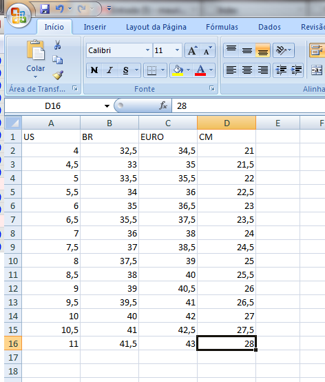
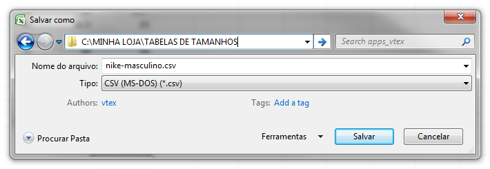
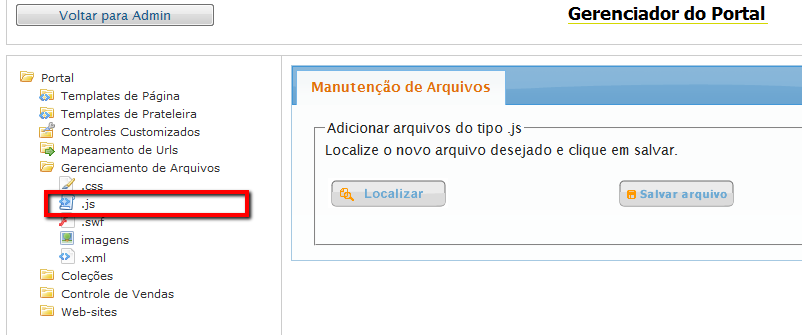

Construa uma tabela de tamanhos/medidas.
Abra o Excel ou outro editor de planilhas que permita exportar/salvar em "comma separated" CSV**. (Colunas separadas por ";" ponto-e-vírgula)
Digite normalmente sua tabela, não se preocupe com o número de colunas, que pode ser maior ou menor do que o exemplo. Mas digite exatamente como gostaria que o seu texto apareça para o usuário, ou seja, não abuse de maíusculas.
Salve sua planilha para futuras mudanças, mas para utilização deste plugin é necessário que a planilha seja salva em CSV. Faça cópias se preferir.
Após salvar suas planilhas, você terá que renomeâ-las. Não porque o plugin necessita de um outro formato, mas porque você precisa subir os arquivos para sua loja online e o "Gerenciador do Portal" não permite extensões diferentes das que você já está acostumado.
Padronizei todos os arquivos renomeando-os com a extensão ".js". Estes nomes serão utilizados no arquivo de configuração.
Ex.: nike-masculino.csv.js, adidas-kids.csv.js. Retire a extensão .csv se quiser, não é obrigatório mantê-la.

O arquivo de configuração que determina quais informações, imagens e arquivos serão utilizados/apresentados nas tabelas. O arquivo é um JSON válido, se tiver alguma dúvida se o JSON é válido, após editá-lo, copie e cole no JSONLINT.
{
"nike": {
"texto": "Nike",
"imagem": "nike.png",
"masculino": "nike-masculino.csv.js",
"feminino": "nike-masculino.csv.js"
},
"adidas": {
"texto": "Adidas",
"imagem": "adidas.png",
"masculino": "adidas-masculino.csv.js",
"feminino": "adidas-feminino.csv.js",
"kids": "adidas-kids.csv.js"
}
}
Coloque o nome que preferir, mas o padrão é "table-sizes-config.js". Se resolver colocar outro nome, não esqueça de mudar a opção ao chamar o plugin.
Para apresentá-las em uma de suas páginas, apenas insira uma tag html <div> que será o conteiner das tabelas.
<div class="vtex_sizes_table">
</div>
E então, dentro de um arquivo javascript ou tag html <script> faça a chamada do javascript.
jQuery(".vtex_sizes_table").vtex_sizes_table();
A lógica para utilização da tabela em um pop up é praticamente a mesma, ou seja, um conteiner deve ser providenciado para inserção da tabela. Exceto, que, um link deve existir para o usuário poder clicar, e, então o pop up aparecer. Segue exemplo com o vtex_popup. Clique aqui para obter o plugin vtex_popup.
Insira um link em sua página.
<a class="vtex_show_table">Veja tabela de tamanhos</a>
Crie uma função em javascript necessária para que o link se ative e monte o html necessário para a tabela e a execute quando o usuário clicar em seu link.
var sizes_table = function(){
var div = jQuery("<div>").addClass("vtex_sizes_table");
jQuery(div).vtex_popup();
jQuery(".vtex_sizes_table").vtex_sizes_table();
}
jQuery(".vtex_show_table").click(function(){
sizes_table();
});
O css (stylesheet) é com você, tanto para a tabela quanto para o pop up.
Altere quando precisar.
{
config_file: "table-sizes-config.js",
img_container: "._vl_img_container",
selector_container: "._vl_sl_container",
table_container: "._vl_table",
files_url: '/arquivos/',
label_brand: "Marca:",
label_gen: "Gênero:",
combo_brand_msg: "Escolha uma marca",
combo_gen_msg: "Escolha um gênero",
data: null
}
Exemplo de utilização:
var minhas_opcoes = {
label_brand: "Produtos:",
combo_brand_msg: "Escolha um produto"
}
jQuery(".tabela_tamanhos").vtex_sizes_table(minhas_opcoes);
*Obs. 1: O plugin carrega contéudo por ajax e o Chrome não dará permissão de acesso LOCAL, a menos que o código seja acessado por um servidor. Você pode utilizar o IIS ou Wamp se preferir, mas este tipo de informação está fora do escopo da instalação deste plugin. Em sua loja online o plugin funcionará normalmente em IE7-10, Chrome, Firefox, Safari e outros.
**Obs. 2: Comma significa vírgula, mas como no Brasil nós utilizamos a vírgula como separador decimal, o Excel (br) tem como padrão exportar/salvar com ponto-e-vírgula. E este foi o parametro utilizado para o plugin para criação das colunas da tabela. Se tiver dúvidas, ao salvar o arquivo neste formato, abra-o em um editor de textos comum, como o notepad.